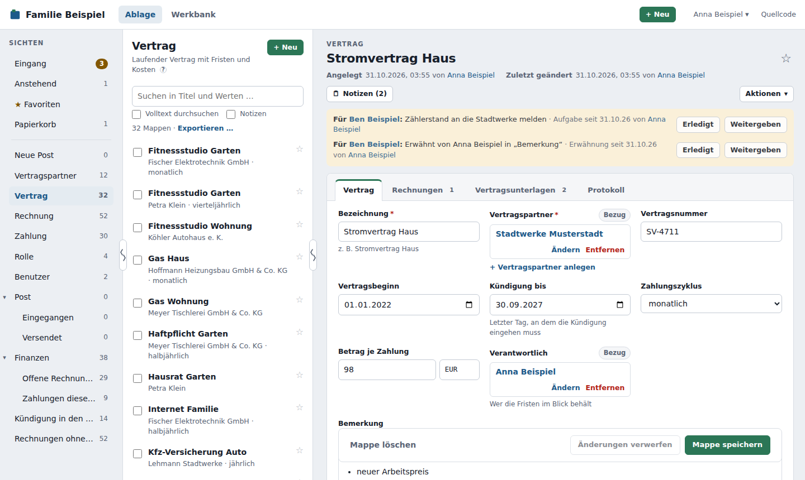
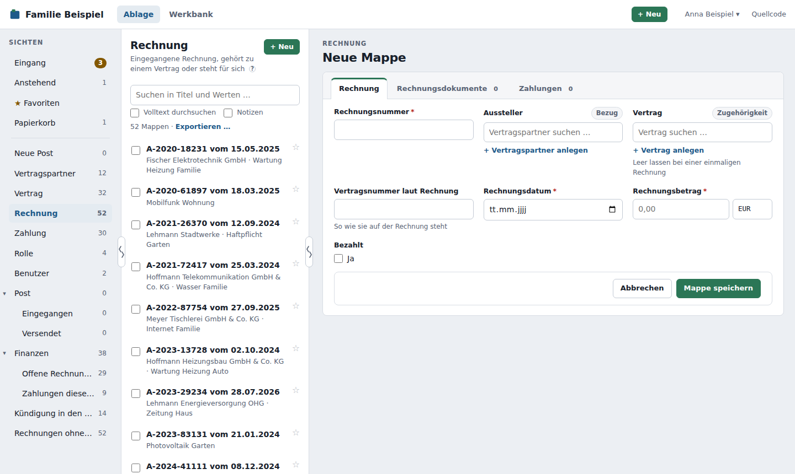
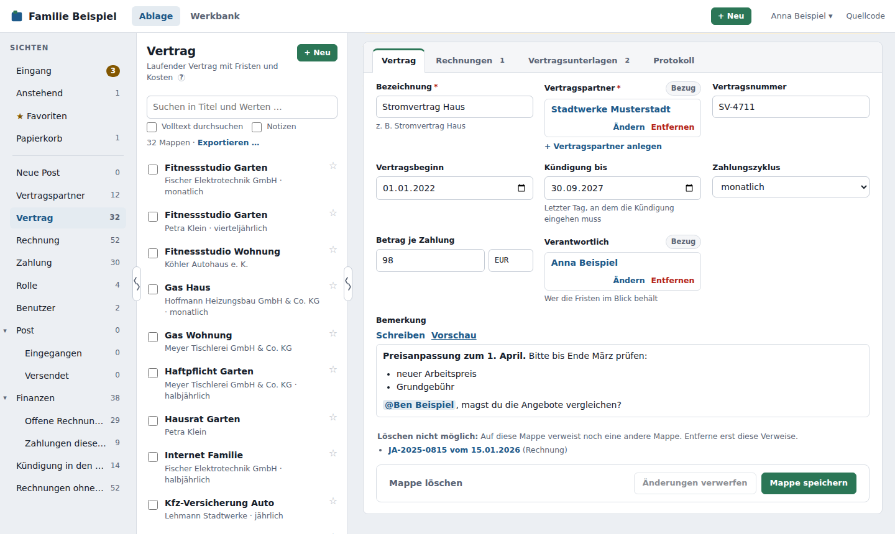
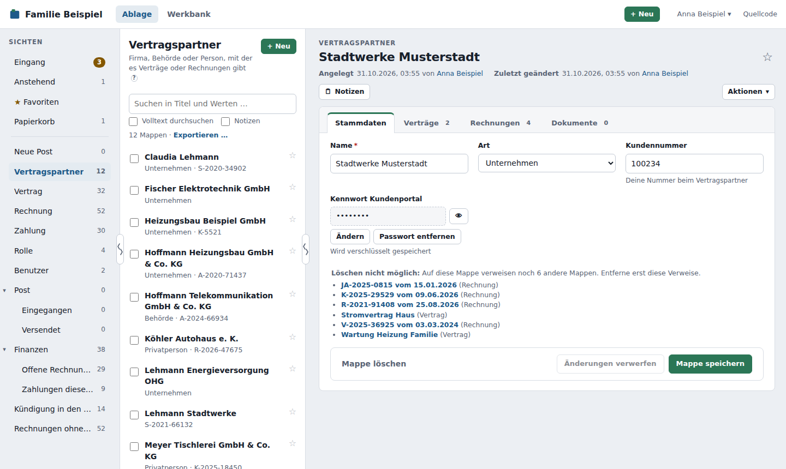
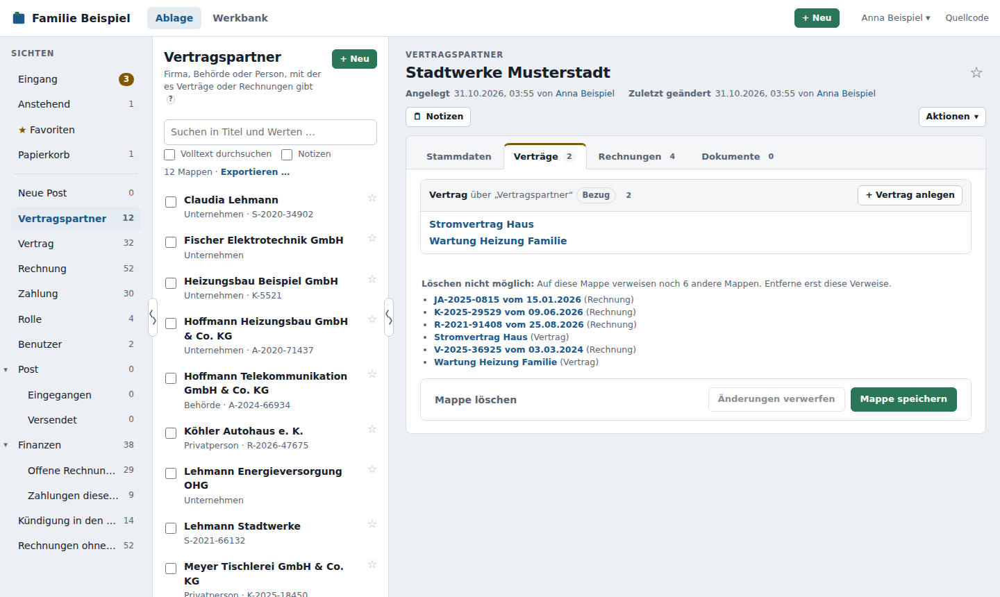
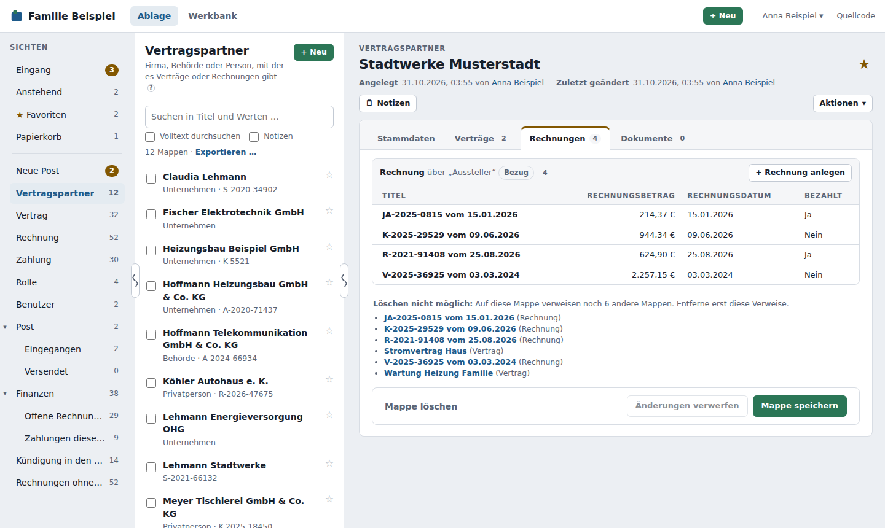

Mappen¶
Eine Mappe sammelt alles zu einer Sache: die Angaben, die Dokumente und die Verbindungen zu anderen Mappen.

Aufbau einer Mappe¶
Oben steht der Titel der Mappe. Ihn musst du nicht selbst schreiben: Das DMS setzt ihn aus den Angaben zusammen, zum Beispiel aus Rechnungsnummer und Datum – „R-2026-117 vom 02.03.2026“. Ändert sich eine Angabe, ändert sich der Titel mit.
Darunter stehen die Indexwerte, die jede Mappe hat: wann und von wem sie angelegt und zuletzt geändert wurde. Als Änderung zählen auch hochgeladene und entfernte Dokumente, nicht aber Notizen oder Aufgaben. Ein Klick auf einen Namen öffnet die Mappe dieses Benutzers. Mit dem Stern ☆ rechts neben dem Titel merkst du dir die Mappe als Favorit.
Darunter folgen die Register – die Trennblätter der Mappe. Es gibt drei Arten:
| Register | Was darin steht |
|---|---|
| Angaben (z. B. „Vertrag“, „Stammdaten“) | Felder zum Ausfüllen |
| Dokumente (z. B. „Vertragsunterlagen“) | Hochgeladene Dateien, siehe Dokumente |
| Verknüpfungen (z. B. „Rechnungen“) | Andere Mappen, die auf diese Mappe verweisen |
| Protokoll | Wer wann was an der Mappe geändert hat, siehe Protokoll |
Hinter Dokumenten- und Verknüpfungsregistern steht, wie viel darin liegt. Ein roter Punkt zeigt, auf welchem Register ein Feld noch nicht stimmt.
Eine Mappe anlegen¶
- Wähle links die Sicht des Mappentyps, zum Beispiel Rechnung.
- Klicke auf + Neu.
- Fülle die Felder aus. Felder mit * sind Pflichtfelder. Unter manchen Feldern steht ein Hinweis, was hineingehört.
- Klicke auf Mappe speichern.

Stimmt etwas nicht – ein Pflichtfeld ist leer, eine Zahl zu groß, eine Nummer schon vergeben –, steht der Grund direkt am Feld, und es wird nichts gespeichert.
Die Felder¶
| Feld | So gibst du es ein |
|---|---|
| Text, Langtext | frei; manche Texte haben eine Höchstlänge oder müssen eindeutig sein |
| Formatierter Text | mit Werkzeugleiste: fett, kursiv, Überschrift, Liste, Zitat, Link; @ erwähnt jemanden (siehe unten) |
| Zahl | mit Komma, z. B. 12,5 |
| Betrag | Zahl und Währung, z. B. 98,00 EUR |
| Datum | über den Kalender oder als Datum |
| Ja/Nein | Haken setzen |
| Auswahlliste | einen Wert (oder mehrere) aus der Liste wählen |
| Verweis | eine andere Mappe suchen und wählen (siehe unten) |
| Passwort | eintippen; gespeichert wird es verschlüsselt (siehe unten) |
Formatierter Text¶
Manche längeren Texte lassen sich formatieren. Über dem Feld steht eine kleine Werkzeugleiste: Markiere Text und klicke auf F (fett), K (kursiv), eine Überschrift, eine Liste, ein Zitat oder einen Link. Im Feld steht dann eine einfache Schreibweise, z. B. **fett** – das ist richtig so. Vorschau zeigt, wie es aussieht.

Tippst du @ oder klickst auf @ Erwähnen, wählst du einen Benutzer aus. Er bekommt dann eine Aufgabe zu dieser Mappe.
In Listen und in der Suche erscheint der Text ohne Formatierung.
Passwörter¶
In einem Passwortfeld (z. B. das Kennwort eines Kundenportals) steht nach dem Speichern nur „••••••••“. Das Auge zeigt das Passwort; jedes Anzeigen hält das DMS im Protokoll fest (wer, wann, welche Mappe – nicht das Passwort). Ändern nimmt ein neues Passwort auf, Passwort entfernen löscht es beim Speichern (bis dahin geht Rückgängig).

Passwörter erscheinen nie im Titel, in Listen oder in der Suche. Steht am Feld „nicht möglich“, hat ein Administrator noch keinen Schlüssel für Passwörter eingerichtet.
Auf andere Mappen verweisen¶
Ein Verweis verbindet zwei Mappen – die Rechnung mit ihrem Vertrag, den Vertrag mit dem Vertragspartner. Tippe in das Feld ein paar Buchstaben des Titels und wähle die passende Mappe aus den Vorschlägen. Bei Feldern, die mehrere Verweise erlauben, wiederholst du das.
Gibt es die Mappe noch nicht, führt + … anlegen unter dem Feld direkt zum Anlegen.
Ein Klick auf einen gesetzten Verweis öffnet die andere Mappe.
Ändern¶
Öffne die Mappe, ändere die Angaben und klicke auf Mappe speichern. Solange etwas nicht gespeichert ist, steht unten „Ungespeicherte Änderungen“. Änderungen verwerfen stellt den gespeicherten Stand wieder her.
Willst du die Mappe mit ungespeicherten Änderungen verlassen, fragt das DMS nach.
Über den Registern stehen außerdem Notizen und das Menü Aktionen (Aufgabe vergeben, per E-Mail versenden, als PDF exportieren, Link kopieren) – siehe Notizen, Erwähnungen, Protokoll und E-Mail, PDF und Link.
Manche Angaben sind nur zum Lesen da und haben einen gestrichelten Rahmen – zum Beispiel Name und E-Mail-Adresse in der Mappe eines Benutzers. Daneben steht, wo man sie ändert.
Verknüpfungen¶
Das Register Verknüpfungen zeigt alle Mappen, die auf diese Mappe verweisen. Beim Vertragspartner siehst du so seine Verträge und Rechnungen, beim Vertrag seine Rechnungen – ohne dass du sie dort eintragen musst.

Je nach Einrichtung erscheinen die Mappen einer Gruppe als einfache Liste der Titel oder als Tabelle mit Spalten, etwa die Rechnungen mit Betrag, Datum und bezahlt. Ein Klick auf eine Zeile öffnet die Mappe.

Mit + … anlegen in der Überschrift einer Gruppe legst du direkt eine neue Mappe an, die schon auf diese Mappe verweist – zum Beispiel eine neue Rechnung zu diesem Vertrag.
Bei einer neuen Mappe ist das Register noch leer: Verknüpfungen entstehen erst, wenn die Mappe gespeichert ist und andere auf sie verweisen.
Zugehörigkeit oder Bezug
Neben jedem Verweis steht, welcher Art er ist. Zugehörigkeit heißt: gehört dazu (die Rechnung gehört zum Vertrag). Bezug heißt: hat nur damit zu tun (die Rechnung kommt von diesem Aussteller). Das hilft später bei Auswertungen wie „alles zum Haus“, damit dort nicht jede Rechnung desselben Handwerkers auftaucht.
Löschen¶
Unten links in der Mappe steht Mappe löschen. Nach einer Rückfrage kommt die Mappe mit ihren Dokumenten in den Papierkorb; dort lässt sie sich eine Zeit lang wiederherstellen. Ist der Papierkorb ausgeschaltet, ist sie sofort endgültig weg.
Eine Mappe, auf die noch andere verweisen, lässt sich nicht löschen. Der Knopf ist dann ausgegraut, und darüber steht gleich, welche Mappen das sind – mit Links dorthin. Entferne zuerst dort den Verweis. So kann kein Vertrag verschwinden, zu dem noch Rechnungen gehören. Verschickte E-Mails und andere Post halten das Löschen nicht auf.
Fehlt der Knopf, dürfen Mappen dieses Typs nicht gelöscht werden.
Was du sehen und ändern darfst¶
Ein Administrator kann je Mappentyp festlegen, wer Mappen anlegen, lesen, bearbeiten, löschen und Passwörter darin sehen darf – zum Beispiel, dass nur die Buchhaltung Rechnungen bearbeitet oder dass vertrauliche Mappen nur ihre Verantwortlichen sehen. Was für dich gilt, steht in deinem Profil unter Meine Rechte.
Das merkst du so:
- Mappen, die du nicht lesen darfst, tauchen in Listen, Suche, Zählern und Favoriten nicht auf. Verweist eine Mappe auf eine solche, steht dort nicht sichtbare Mappe ohne Link.
- Ohne Bearbeiten zeigt eine Mappe ihre Felder und Dokumente nur an; unten steht „Nur lesen“. Notizen und Aufgaben gehen trotzdem.
- Ohne Löschen fehlt „Mappe löschen“, ohne Anlegen fehlt „+ Neu“, ohne Passwörter sehen fehlt das Auge an Passwortfeldern.
- Hängen deine Rechte von einem Feld ab (etwa „Verantwortlich“) und würdest du dir mit einer Änderung selbst das Lesen oder Bearbeiten nehmen, fragt das DMS vor dem Speichern nach.
- Bei der Auswahl von Benutzern (Verantwortlich, Erwähnungen, Vertretung, Aufgaben) erscheinen nur die, die du sehen darfst.
- Deinen Papierkorb siehst du immer; was du daraus wiederherstellst, siehst du danach aber nur, wenn du die Mappe lesen darfst.